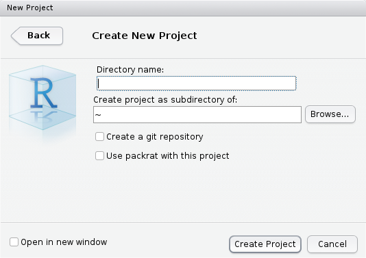

¿Cómo crear un proyecto en RStudio?
¿Qué es un Proyecto?
R trabaja con un directorio de trabajo o working directory que es la dirección o path que figura en el titulo del panel Console. Por defecto es el directorio base del usuario que depende de cada plataforma. En linux es el /home/usuario en cambio en Windows es C:/Users/usuario/Documents. A menos que se especifique lo contrario, se asume que los archivos de entrada o salida se ubican en dicha carpeta. Esto se puede modificar en cualquier momento con la función setwd().
RStudio extiende esta característica a través de los proyectos o projects. Cada proyecto es una carpeta o folder que contienen un archivo .RProj con algunas configuraciones específicas. Al abrirlo en RStudio, automáticamente se cambia el directorio de trabajo a esta carpeta. Esto permite organizar los archivos de datos, las salidas, los scripts, etc., dentro de un directorio de trabajo (working directory) y volver a ellos de manera más rápida, eficiente, y portable.
¿Cómo crar un proyecto?
Para crear un proyecto:
- Ir a
File > New project...o bien el íconoCreate projectde la barra de herramientas.

- Seleccionar
New Directoryy enProject typeseleccionarNew project.

- Una vez en el cuadro de diálogo
Create new projectingresar el nombre del proyecto (e.g.DOE) enDirectory nameque será a su vez el nombre de la carpeta que RStudio va a crear por nosotros. Luego enCreate project as a subdirectory ofindicar donde queremos que Rstudio cree la carpeta.

- Si todo sale bien, se crea la carpeta con el nombre que indicamos y dentro de ésta un archivo con extensión
.Rproj